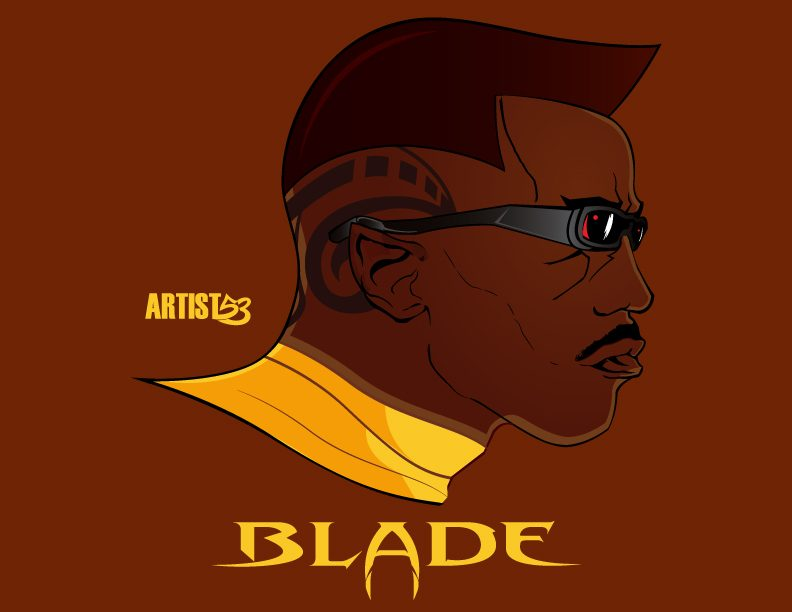
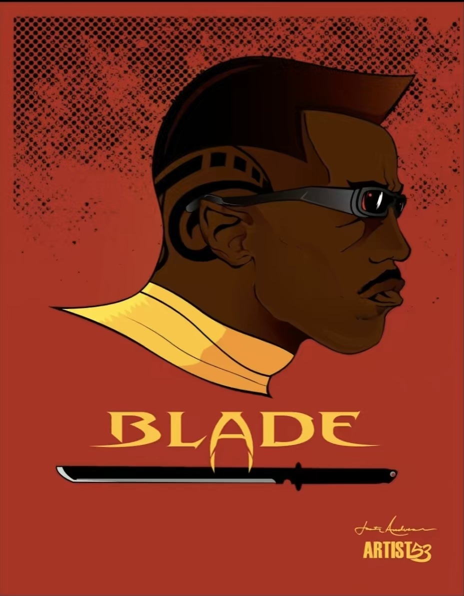

Blade
Comics / Marvel
Featured in #thevectorlounge
Wesley Snipes as Blade, illustrated through the ARTIST53 lens.
Back To Illustration


Comics / Marvel
Featured in #thevectorlounge
Wesley Snipes as Blade, illustrated through the ARTIST53 lens.
Back To Illustration
